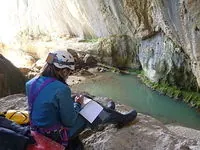
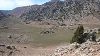

Bir Kez Daha Kahramanmaraş
 22-24 Ekim arasında bir kez daha Kahramanmaraş Tekir bölgesinde idik. Her zamanki gibi Döngel Köyü'nde Karadaş'lara misafir olduk, kısıtlı sürede kısıtlı ekiple olabildiğince çok iş çıkarabilmek için çırpındık. Ölesiye yorgun olarak döndük.
22-24 Ekim arasında bir kez daha Kahramanmaraş Tekir bölgesinde idik. Her zamanki gibi Döngel Köyü'nde Karadaş'lara misafir olduk, kısıtlı sürede kısıtlı ekiple olabildiğince çok iş çıkarabilmek için çırpındık. Ölesiye yorgun olarak döndük.
İlk gün Döngel Mağarası'na bir kez daha indik. Amaçlarımızdan biri daha önce ulaşamadığımız üç üst kola tırmanmak idi. Ancak bunların ikisi, tırmanış platforumu olmadan ve bir sürü bolt çakmadan ulaşılamayacak kadar zor bir duvarda. Üçüncüsüne ise ODTÜ'lü Heyecan ve Semih sayesinde tırmanıldı ve kısa mesafeli yeni bir galeriyi keşfedilmiş oldu. Diğerleri için tekrar gelmemiz gerekecek.

Bunun dışında bu muhteşem mağaranın hakkını vermeyen ilk haritamızı biraz toparlayabilmek için ilave ölçümleme çalışması yapıldı. Ayrıca devasa çökme kayaların altında ayrı bir galeri olarak yeralan aktif su akışı seviyesine inildi.İkinci gün ise Kefenli Mağarası'nın dibine ulaştık ve haritalamasını tamamladık. Bu mağarayı geçen sene ilk bulduğumuzda dikey iniş malzemesi eksikliği nedeniyle döndüğümüz noktadan sonra 3 iniş yapıldı ve toplamda -81 m derinlikte daralarak geçilmez hale gelen bir noktadan dönüldü.

Bir yandan da ikinci bir ekip, uydu görüntülerinde belirlediğimiz ve topografik haritadan teyit ettiğimiz Bayram Ovası havzasına ulaşarak buradaki düdeni tespit ettiler. Ancak toprak düden şeklinde batan suyun ulaşılabilir bir mağara sistemi olmadığı anlaşıldı.Son gün ise yine ikiye ayrıldık ve birinci ekip bahar aylarında tespit edip aşırı su akışından giremediğimiz Söğütova Düdeni'ne yollandı. Bu kez mağaraya batan dere tamamen kurumuştu. Ancak -25 metrede karşılaşılan derin ve menderesler çizerek uzanan 2 m genişliğindeki göl, mevcut imkânlarla aşılamadı. Daha kalabalık bir ekiple gelmeyi planladığımız bu düdenin ne şekilde devam ettiğini belirlemek, ilerideki planlama için iyi olacaktı, ama olmadı.
İkinci ekibimiz ise Gaziantep'de çok ilginç bir proje için bazı incelemelerde bulundu ve görüşmeler yaptı.
Bir kaç resim Gallery'de.